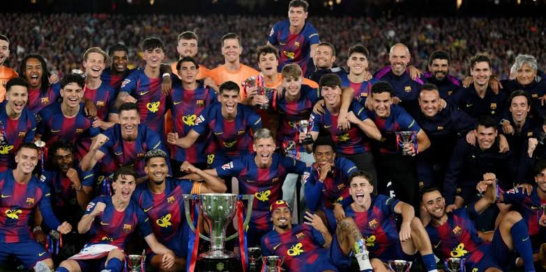

História e Filosofia
Fundado em 1899 por um grupo de futebolistas suíços, ingleses e catalães, o FC Barcelona tornou-se um símbolo da identidade cultural da Catalunha. O clube carrega o lema oficial de ser "Més que un club" (Mais que um clube) devido ao seu posicionamento social e à sua forte representatividade.

A Filosofia "La Masia"
La Masia é o nome dado às famosas categorias de base do clube. Conhecida por lapidar talentos com foco no controle de bola, passes curtos e dinamismo tático (o famoso "Tic-Tac"), a academia revelou lendas mundiais como Lionel Messi, Xavi Hernández e Andrés Iniesta.
O Incomparável Sextete
Em 2009, sob o comando técnico de Pep Guardiola, o Barcelona assombrou o planeta ao conquistar os seis títulos possíveis disputados em um único ano civil, feito raríssimo na história do futebol mundial.